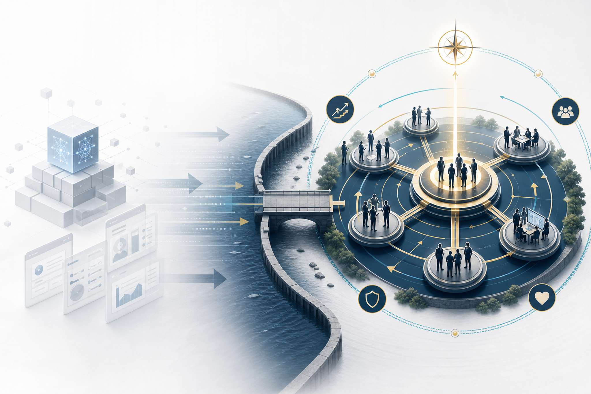
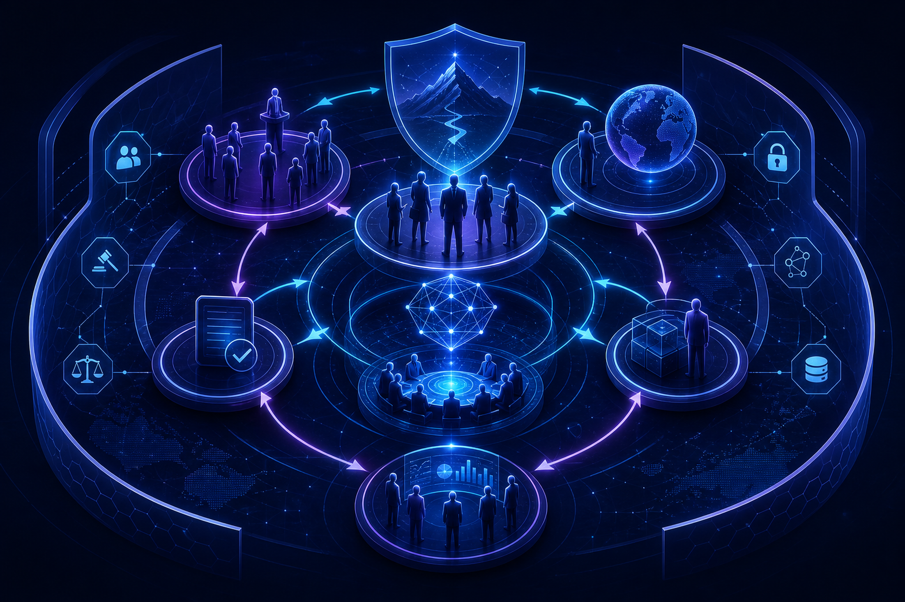

AI 애플리케이션, 인프라, 워크플로우 회사들이 서로의 영역으로 이동하며 유사한 언어와 포지셔닝을 사용합니다.
1. 원문 요지: 보이는 것은 더 빨리 복제된다
모델 성능이 빠르게 개선되고 인터페이스가 수렴하면, 기능과 UX는 더 쉽게 모방됩니다.
지속 가능한 차이는 탁월한 사람을 끌어들이고, 판단을 축적하며, 권한을 배분하는 조직의 작동 방식에서 나옵니다.
2. “조직 발명”으로서의 위대한 회사
원문은 OpenAI와 Palantir 같은 회사를 단순한 기술 회사가 아니라 새로운 종류의 일을 가능하게 만든 조직 발명으로 해석합니다. OpenAI는 frontier model training을 중심 활동으로 놓고 연구, 안전, 정책, 인프라, 제품, 배포를 그 주변에 재배열했습니다. Palantir는 고객 현장과 복잡한 제도권 문제를 낮은 지위의 지원 업무가 아니라 회사의 중심 권력으로 만들었습니다.
이 관점에서 중요한 질문은 “우리 제품은 무엇인가?”가 아니라 “우리 회사 안에서만 탄생할 수 있는 사람과 일의 형태는 무엇인가?”입니다.

제품·모델 중심 해자에서 조직·인재·권한 중심 해자로 이동하는 구조
3. 창업자에게 주는 질문
“우리가 더 좋은 스토리를 어떻게 말할까?”보다 중요한 질문은 “어떤 종류의 사람이 여기에서만 자기 자신이 될 수 있는가?”입니다.
거대한 미션을 말하지만 권한이 중앙집중되어 있다면 후보자는 공허함을 느낍니다. 반대로 큰 구조를 만들었는데 작은 이야기만 한다면 최고의 인재를 놓칩니다.
고객 대면 업무가 실제로 높은 지위를 가져야 합니다. 말로만 customer obsession을 외치고 현장 권한을 낮추면 조직 약속은 깨집니다.
의사결정권을 edge로 밀어내야 합니다. 책임만 주고 권한을 주지 않으면 속도는 슬로건에 그칩니다.

4. 선택하는 사람에게 주는 경고
원문은 인재 관점에서도 날카로운 구분을 제시합니다. 회사가 나를 “선택했다”는 감정과, 조직이 나의 가치를 구조적으로 인정했다는 사실은 다릅니다.
- 선택받음: 너는 특별하다, 우리는 너를 믿는다, 이 미션에 어울린다.
- 보여짐: 여기까지가 네 권한이고, 이 범위가 네 소유이며, 성공 시 경제적·조직적으로 무엇이 바뀐다.
고성과자는 소속감과 사명감 때문에 창업자처럼 일하지만, 실제 권한·경제성·스코프는 직원 수준에 머무를 수 있습니다. 원문은 이를 “identity로 지불하고 structure로 받지 못하는 위험”으로 해석합니다.
5. Enterprise AI 관점의 시사점
| 논점 | 기업 적용 의미 | 실행 질문 |
|---|---|---|
| AI CoE의 한계 | AI 전담조직이 PoC 생산 공장에 머물면 해자가 되기 어렵습니다. 운영 권한, 플랫폼 표준, 현업 확산 구조를 가져야 합니다. | AI CoE가 예산·아키텍처·데이터 접근·운영 기준을 실제로 결정할 권한이 있는가? |
| 고객/현장 근접성 | AI transformation은 현장의 messy한 프로세스를 이해하는 사람이 높은 지위를 가져야 성공합니다. | 고객·현업과 붙어 있는 사람이 제품/플랫폼 의사결정에 들어오는가? |
| 인재 밀도 | AI 도입 속도는 도구보다 판단 밀도에 좌우됩니다. 뛰어난 사람이 같은 문제 공간에서 밀도 높게 일해야 합니다. | 핵심 AI 과제에 평균적 운영 리듬이 아니라 최고 인재의 운영 리듬이 적용되는가? |
| 권한과 책임의 정렬 | AI agent, 데이터, 거버넌스 업무는 책임만으로 굴러가지 않습니다. 명확한 decision right와 escalation 구조가 필요합니다. | 성과 책임자에게 데이터·보안·모델·프로세스 변경 권한이 함께 주어지는가? |
모바일에서는 표가 카드형 행으로 전환됩니다.
6. 한국 기업을 위한 실행 프레임
모델 선정 이전에 역할, 권한, 데이터 접근, 보안 책임, 현업 참여 방식을 명확히 합니다.
컨설팅, 현업, 데이터, 엔지니어링을 연결하는 hybrid operator가 낮은 지원 역할이 아니라 핵심 주체가 되어야 합니다.
“AI 전환”이라는 슬로건을 예산, KPI, 승진, 권한, 거버넌스 회의체로 번역해야 합니다.
AI 과제 담당자가 데이터·보안·운영 변경권 없이 결과만 책임지는 구조를 피합니다.
7. 결론: AI 해자는 조직 운영체제다
AI는 많은 것을 더 쉽게 복제하게 만듭니다. 제품 화면, 워크플로우, 프로토타입, 피치 문구, 초기 개발 속도까지 복제 가능성이 커집니다. 그러나 복제하기 어려운 것은 여전히 사람이 모여 판단을 축적하는 방식입니다.
따라서 다음 AI 경쟁에서 중요한 것은 “우리도 AI 기능을 만들었다”가 아니라 “우리는 어떤 사람을 어떤 권한과 어떤 상태로 모아, 어떤 문제에 오래 붙게 만들 수 있는가”입니다. 한국 기업의 AI 전환도 결국 모델 도입 프로젝트가 아니라 조직 운영체제 재설계의 문제가 될 가능성이 큽니다.
부록: Image Prompt
목적: 히어로 이미지
삽입 위치: 상단 hero
image2 프롬프트: Executive Korean tech blog hero image: AI companies converging, product surfaces becoming copyable, organizational design as the next moat, abstract boardroom and neural network architecture, premium editorial illustration, no logos, no readable text
권장 비율: 16:9
alt: AI 기업의 다음 해자가 조직 설계로 이동하는 모습을 표현한 히어로 이미지
목적: 핵심 트렌드 인포그래픽
삽입 위치: 조직 발명 섹션
image2 프롬프트: Strategic infographic image: AI moat shifts from model and product interface to organization, talent density, decision rights, customer proximity, mission, governance, clean executive consulting style, no logos, minimal abstract text-free diagram
권장 비율: 16:9
alt: AI 경쟁우위가 모델과 제품에서 조직 구조와 인재 밀도로 이동하는 인포그래픽
목적: 운영모델 개념도
삽입 위치: 선택하는 사람에게 주는 경고 섹션
image2 프롬프트: Enterprise operating model concept image: people, authority, ownership, mission and feedback loops forming a defensible institution in the AI era, modern dark blue and violet executive design, no logos, no readable text
권장 비율: 16:9
alt: 사람, 권한, 소유권, 미션이 순환하며 AI 시대 조직 해자를 만드는 운영모델 이미지